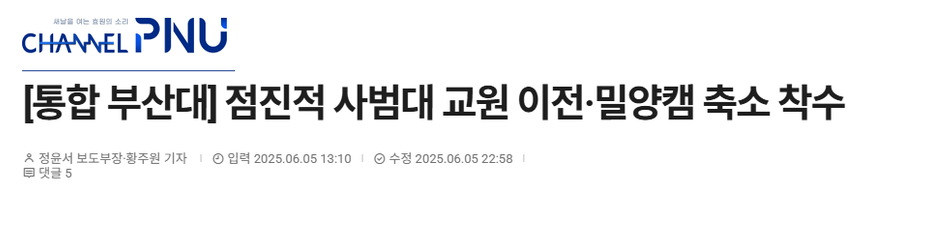

위기관리 · 대학 구조개편 사례 분석
변화의 결단은
왜 위기가 되는가
부산대–부산교대 통합과 동덕여대 남녀공학 전환의
위기 커뮤니케이션 비교 분석
대한민국 대학 구조개편 · 보도 사례
대학 통합·공학화 논의가 잇따르는 구조개편 흐름
대학 간 조직·캠퍼스 재편
여성대학의 남녀공학 전환
대학 통합과 남녀공학 전환 논의가 언론 보도와 학내 갈등으로 드러난 사례를 살펴본다.




위기 진단 · 서로 다른 반대 공중
같은 통합 구상, 서로 다른 우려와 절차 갈등
교원양성 기능 결합
글로컬대학 공동 신청
남녀공학 전환 논의
2023년 5월 일부 사범대 이전 구상 공개
사전 협의 부족에 대한 문제 제기
2024년 11월 전환 논의 공개
사전 협의와 의사결정 절차 논란
부산대 사범대 학생 · 교육·실험시설과 수업환경 우려
부산교대 학생 · 정체성, 초등교원 자격, 협의 절차 우려
재학생 · 여대 유지, 논의 중단, 결정 절차 참여 요구
부산교대 학생 수업거부(5월 24~25일)
5월 10일 투표: 참여율 7.18%, 참여자 중 51.27% 반대
캠퍼스 집단행동과 수업 차질
2025년 12월 학생 총투표 응답자 중 85.7% 전환 반대
부산 ① · 2023년 초기 갈등
통합 반대 안에도 서로 다른 요구가 있었다
부산교대 학생 투표
참여율 7.18%
부산교대 교수회의
공동 지원 결정
부산교대 학생 기자회견
· 수업거부
부산대 설명회에서
사범대 이전 구상 제시

부산대 사범대 학생
이전 뒤 강의·실험시설과 수업의 질을 우려했다.
부산교대 학생
학교 정체성과 초등교원 자격의 경계, 결정 전 협의를 요구했다.
반대는 학생 투표·기자회견·수업거부로 공개적으로 관찰됐다.
부산 ② · 2023년 설명과 수정
사범대 이전 구상은 철회됐지만 반대는 남았다
연제캠퍼스로 이전
부산대 사범대의 시설·수업 환경 우려
교육대학원·교육 기능의 연제캠퍼스 집적은 유지

9월 7~8일 부산대 학부생 투표 참여자 2,360명 중 1,500명이 전체 통합에 반대
이 투표는 전체 통합에 관한 것이며, 사범대 이전안 철회의 효과를 측정한 조사가 아니다. 부산교대 학생대표의 별도 조사 결과는 다른 공중·표본이다.철회는 대학의 계획 조정이다. 학생의 양보 가능성과 구분한다.
동덕 ① · 2024년 논의 공개
본부의 절차 설명은 학생 요구와 엇갈렸다
본부는 학부모에게 사과하며 점거와 수업 차질을 설명했다.
“교무위원회 보고도 이루어지지 않은
의제설정 이전의 상황”
공학 전환 논의 중단과 사전 협의. ‘아직 결정 전’이라는 설명만으로 요구는 충족되지 않았다.
사전 협의 공백과 결정 단계 설명 이후에도 학생의 논의 중단·협의 요구가 남았다.
동덕 ② · 2024년 직접 협의
대면 협의는 논의를 멈췄지만 핵심 요구는 남겼다
공학 전환 반대와 논의 중단 요구
약 3시간 대면 협의
재개 시 학생 협의·수업 재개

확인된 효과
면담과 잠정 중단은 실제 조치였다.
남은 쟁점
여대 유지 요구가 받아들여졌다는 기록은 없다.
면담 뒤 논의는 잠정 중단됐고, 여대 유지 요구는 별도로 남았다.
동덕 ③ · 2025~26년 공론화와 결정
공식 결정이 진행돼도 학생 반대는 계속됐다
공학 전환 선택
여대 유지 선택
전환 반대

공식 결정의 진행
2025.12전환 방침 발표
2026.1.12평의원회 8:2 의결
(취재 보도)
2.26 → 3.1학칙 개정·공고
시행
학생 반대 투표와 공론화 대표성·집계 규칙에 대한 이의도 지속
대표성·집계 규칙은 공개 쟁점이 됐지만 신뢰 수준은 측정되지 않았다.